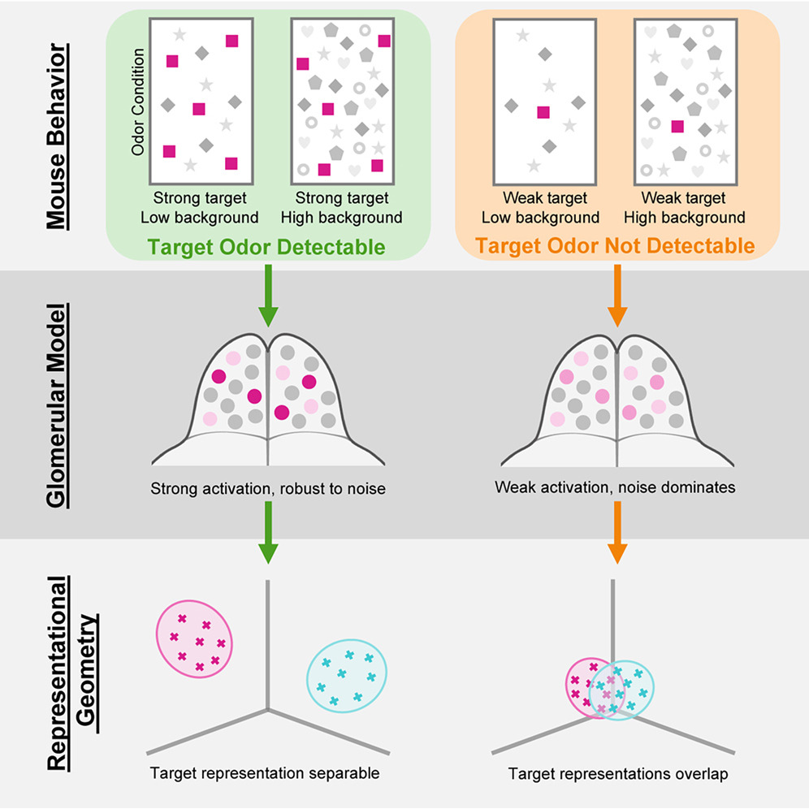
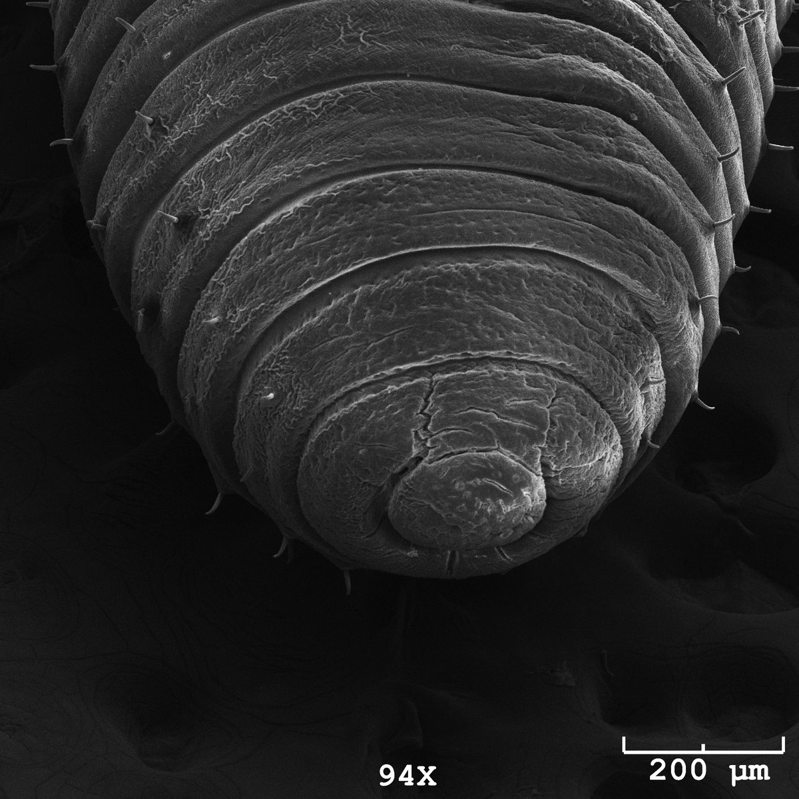
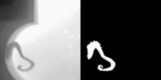

Research
I study how sensory information is represented in the brain, and how those representations change with time and experience. My work has focused primarily on chemosensation across a range of species.
 Representational drift in the olfactory tubercle
Representational drift in the olfactory tubercle
The olfactory tubercle is a region where sensory information and learned value converge. For my dissertation, I use longitudinal two-photon calcium imaging to track the same neurons across weeks while mice learn an odor discrimination task.
I am interested in how stable these representations remain over time, and whether they continue to drift even after behavioral performance has stabilized.
 Continual learning of new odors
Continual learning of new odors
I also ask how established sensory representations respond to new learning. When mice learn new odors, I examine how those representations are incorporated and whether learning alters representations that were already established.
 Odor discrimination in complex mixtures
Odor discrimination in complex mixtures
Odors are often encountered as mixtures whose composition and concentration vary. In this work, we examined how mice identify behaviorally relevant odors under these conditions, and found that sparse input representations can account for robust discrimination across complex, concentration-varying mixtures.

 Electronic nose
Electronic nose
I am developing an electronic nose inspired by the combinatorial coding principles of biological olfaction. Rather than relying on specialized sensors for individual chemicals, the system uses patterns of activity across an array of broadly responsive sensors to discriminate between odors.
 Earlier work
Earlier work
Chemoreceptive development in earthworms
My undergraduate research examined how chemosensory structures and behaviors develop in Eisenia hortensis. I used microscopy and behavioral assays to follow changes in chemoreception across development.

Octopus neuroanatomy and behavior
During an NSF REU, I used micro-CT imaging to help build a 3D anatomical atlas of the octopus nervous system. I also developed image segmentation methods to track arm movement from video and quantify behavior.
